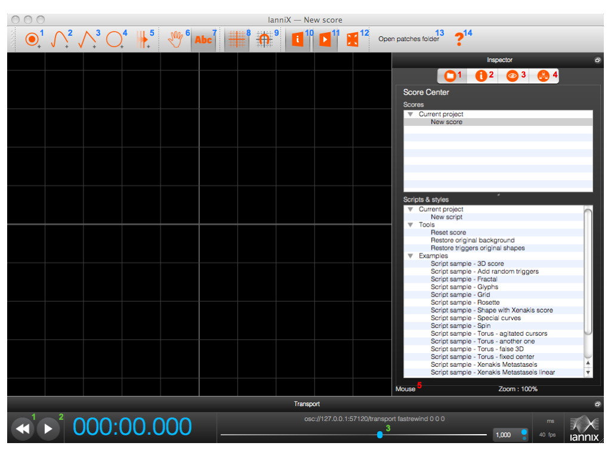
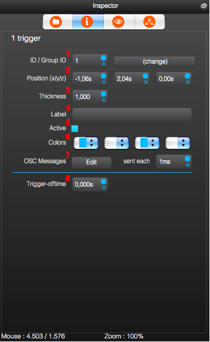
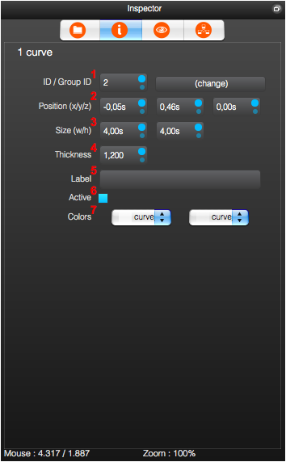
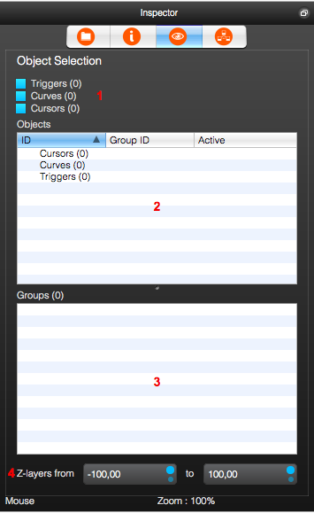
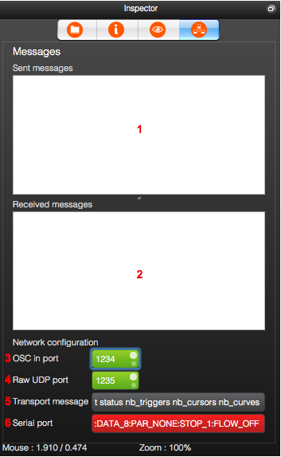

| Introduction | Main elements |
Messages sent and received |
Graphical interface |
Scripts | Reference | Functions index |
Keyboard Shortcuts
In the Score and for Objects:
CONTROL/COMMAND:browse into the score without moving or selecting objectsSHIFT:add objects into the selectionALT:3D navigationWHEEL:zoomSHIFT+WHEEL:quick zoomESC:cancel the selection or fullscreen display
Editing curve:
DOUBLE-CLICKon curve : add a point on the curveDOUBLE-CLICKon a point : toggle point between Bezier or straight lineCONTROL/COMMAND:+DOUBLE-CLICremove a point on the curve
Overview
|
Toolbar:
The toolbar allows you to add objects manually. |
Inspector:
|
Playback:
|
The inspector
The Property Inspector display changes depending on whether a curve, cursor or trigger is selected in the score.
Trigger
|  |
|
Cursor
 |
Curve
|  |
|
Select objects
|  |
|
Messages
|  |
|
Context menus
A context menu is provided for managing files in the "Scripts & Style" list of the Inspector. The menu opens with a right-click on a script or style file. (Or use CONTROL Click on Macintosh).
Commands on Script-File Menu
Run:Run the script or style in the fileNew:Create a new script or style fileDuplicate:Duplicate the script or style fileDelete:Delete the script or style fileOpen:Open the script or style fileOpen in external editor:Open the script or style file in the system-registered editor for *.nxscript files.